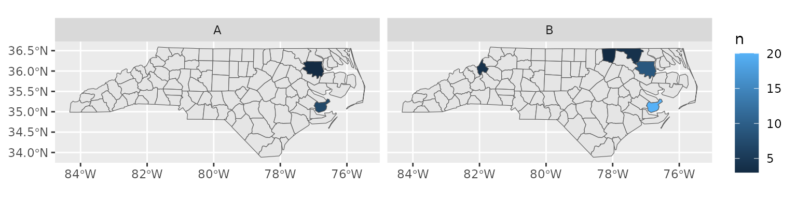

Cartographer comes with one example dataset registered (the map of
North Carolina provided by the sf package where the
feature names correspond to counties). If you install the
{maps} package, some additional maps are available.
library(cartographer)
# list registered datasets
feature_types()
#> [1] "maps.italy" "rnaturalearth.countries_hires"
#> [3] "maps.lakes" "rnaturalearth.countries"
#> [5] "rnaturalearth.australia" "maps.nz"
#> [7] "maps.world" "maps.state"
#> [9] "sf.nc" "maps.france"
# list feature names in one of the datasets
head(feature_names("sf.nc"))
#> [1] "Ashe" "Alleghany" "Surry" "Currituck" "Northampton"
#> [6] "Hertford"Our example dataset has a column called county with the
name of the county and a column type that is one of two
values. We’d like to draw a map that shows us where the entries are by
type.
head(nc_type_example_1)
#> county type
#> 1 BERTIE B
#> 2 BERTIE A
#> 3 BERTIE A
#> 4 PAMLICO B
#> 5 WARREN B
#> 6 PAMLICO BWe want to convert our data frame into a spatial data frame, then
we’ll be able to use standard ggplot2 tools to draw our
map. Cartographer just needs to know which of its maps we’re using
("sf.nc", although it’s able to guess that if we don’t
specify it), and which column has the feature names
(county):
add_geometry(nc_type_example_1, county, feature_type = "sf.nc")
#> Error in `resolve_feature_names()`:
#> ! location contains unexpected values
#> ✖ The unknown values are PAMILCO.
#> ℹ Expected sf.nc names like Ashe, Alleghany, and Surry.
#> ℹ See feature_names('sf.nc') for the full list.What happened? The matching of county names was case-insensitive, so
that wasn’t the issue; it looks like our data contained a typo. One of
the rows contains "PAMILCO" instead of
"PAMLICO" in the county column.
library(dplyr, warn.conflicts = FALSE)
# cleaned dataset
nc_type_example_1_fixed <-
nc_type_example_1 |>
mutate(county = case_match(county, "PAMILCO" ~ "PAMLICO", .default = county))
add_geometry(nc_type_example_1_fixed, county, feature_type = "sf.nc")
#> Simple feature collection with 50 features and 2 fields
#> Geometry type: MULTIPOLYGON
#> Dimension: XY
#> Bounding box: xmin: -82.07776 ymin: 34.98222 xmax: -76.50713 ymax: 36.55629
#> Geodetic CRS: NAD27
#> First 10 features:
#> county type geometry
#> 1 BERTIE B MULTIPOLYGON (((-76.78307 3...
#> 2 BERTIE A MULTIPOLYGON (((-76.78307 3...
#> 3 BERTIE A MULTIPOLYGON (((-76.78307 3...
#> 4 PAMLICO B MULTIPOLYGON (((-76.94324 3...
#> 5 WARREN B MULTIPOLYGON (((-78.30876 3...
#> 6 PAMLICO B MULTIPOLYGON (((-76.94324 3...
#> 7 NORTHAMPTON B MULTIPOLYGON (((-77.21767 3...
#> 8 PAMLICO A MULTIPOLYGON (((-76.94324 3...
#> 9 PAMLICO B MULTIPOLYGON (((-76.94324 3...
#> 10 PAMLICO B MULTIPOLYGON (((-76.94324 3...Now that we have our spatial geometry added, we can go ahead and plot
it, adding a layer that uses the full "sf.nc" dataset to
give us the base map:
library(ggplot2)
nc_type_example_1_fixed |>
count(county, type) |>
add_geometry(county, feature_type = "sf.nc") |>
ggplot() +
geom_sf(data = map_sf("sf.nc")) +
geom_sf(aes(fill = n)) +
facet_wrap(vars(type))
The package ggautomap uses cartographer to provide some new ggplot2 geoms that transparently attach the map data.